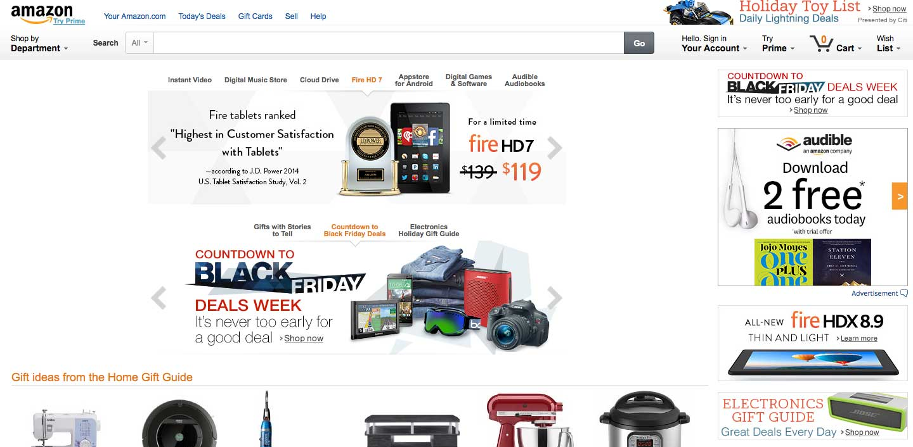
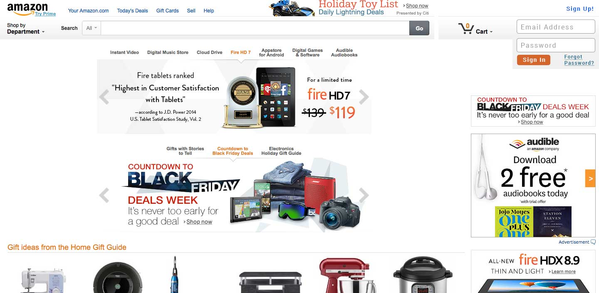

Amazon.com UI Redesign.
The index page for Amazon.com has a very cramped and slightly confusing interface. In the upper right hand corner there is way too much unnecessary information. All of the account information and wish list menu only pertains to a logged in user, which makes it unneeded at this point. On top of that there is an advertisement cramping up the top space making everything even harder to sort out. Below is an example of Amazon's index page.
The Redesign.
For this redesign I chose to remove the Account information menu, the Try Prime menu, and the Wish List menu because they only pertain to a logged in user. Instead I placed a minimal login form in the upper right hand corner, and a simple Sign Up link at the top for those that don't have an account. The advertisement that Amazon felt was important enough to place at the top of the page was moved more towards the center, above the site search. This keeps the importance of the advertisement in place while making sure that the user can log in to the site easily. Let's face it, if a user logs in, they are looking to buy!
